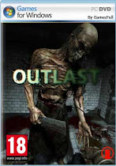
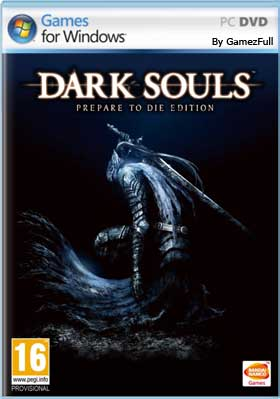

|  |
Outlast PC Full Español / Windows es un horror de supervivencia FPP, este es un proyecto de debut de Red Barrels, un estudio fundado por personas que habían trabajado en series como Prince of Persia, Assassin's Creed, Splinter Cell y Uncharted.La acción tiene lugar en los Estados Unidos, en asilo ubicado en Colorado. Un largo edificio abandonado fue comprado por la corporación Murkoff para abrir allí un centro de investigación. En Outlast para PC / Windows juegas como Miles Upshur, un periodista que aprende sobre algunas cosas extrañas que suceden en la instalación. Para descubrir la verdad, entra en el complejo y descubre que aparte de los experimentos médicos prohibidos también se llevan a cabo rituales blasfemos.
Sin armas, equipado con una cámara y unas baterías de repuesto, Miles entra en el edificio que lo saluda con sangrientas escenas de reciente masacre. Alguien, o algo, está matando a los residentes y al personal de la instalación, mientras que los únicos testigos vivientes de estos horribles crímenes están demasiado perturbados para ayudar. |
Requisitos Recomendados
SO: Windows XP / Windows Vista / Windows 7 o posterior
Procesador: Intel Core 2 Duo E6850 a 3.0 GHz / AMD Phenom II X2 545 a 3.0 GHz o superior
Memoria: 2 GB de RAM
Disco Duro: 4 GB de espacio libre
Tarjeta de Vídeo: nVidia GeForce 9800 GTX+ / ATI Radeon HD 4870 o superior
Versión de DirectX®: 9.0c
Sonido: Dispositivo compatible con Direct Sound |
Descargar |
|  |
Dark Souls para PC, X360 y PS3 es un RPG de acción ambientado en un universo de fantasía oscura, el juego fue desarrollado por From Software Studios, los autores de Demon's Souls, un representante extremadamente exigente del mismo género que ganó los corazones de los propietarios de PlayStation 3 en 2009.Dark Souls para PC, X360 y PS3 se encuentra en el universo diseñado para parecerse a una fantasía medieval y en realidad se inspira en diversos temas. Una vez más, estos son, entre otros: caballeros y reyes, la muerte y el inframundo, o el fuego y el caos. En contraste con el trabajo anterior de From Software Studios, el área de juegos de Dark Souls no estaba dividida en niveles separados.
En su lugar, puedes disfrutar de viajes sin inconvenientes entre diferentes zonas y ubicaciones grandes: puedes ir al lugar que veas en la pantalla. De esta forma, los desarrolladores enfatizaron el rol de la exploración y crearon ubicaciones más complejas (construidas no solo horizontalmente sino también verticalmente). En el juego puedes volver a adentrarte en oscuros corredores de castillos o subterráneos abandonados, sin tener un mapa detallado en tu mano. El recorrido dura aproximadamente 60 horas. |
Requisitos Recomendados
Requiere un procesador y un sistema operativo de 64 bits
SO: Windows 10 64-bit
Procesador: Intel i5-6600k (4 core 3.5 GHz) or AMD Ryzen 5 2400 G (4 core 3.6 GHz)
Memoria: 8 GB de RAM
Gráficos: NVIDIA GTX 1060 (6 GB) or AMD RX 570 (4 GB)
DirectX: Versión 11
Almacenamiento: 70 GB de espacio disponible
Notas adicionales: DirectX feature level 11_1 required |
Descargar |